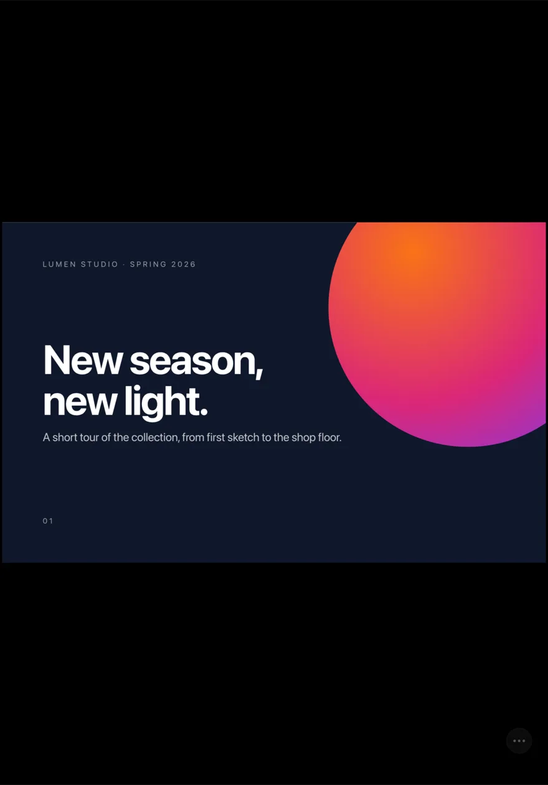
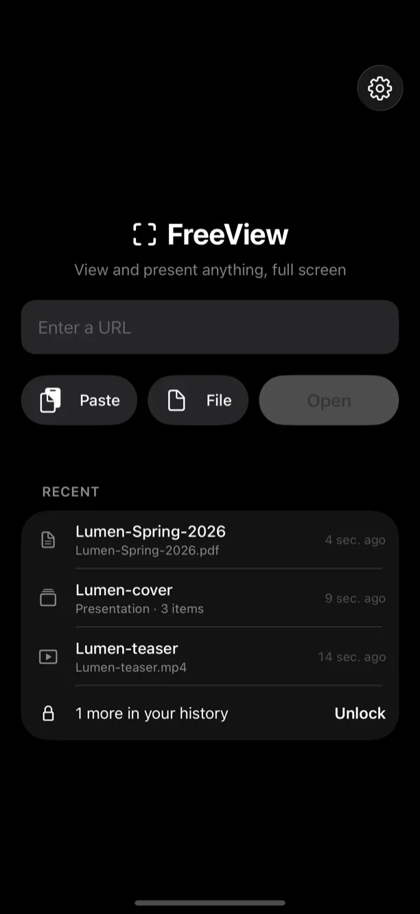
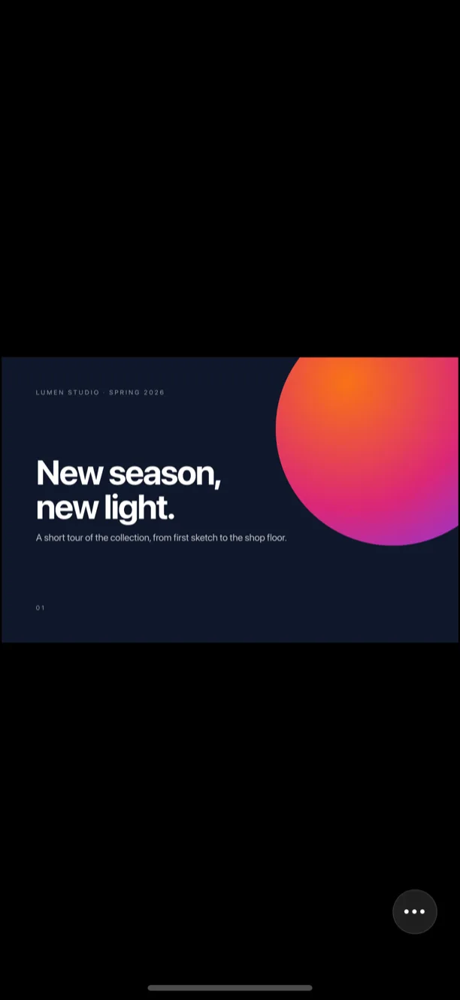
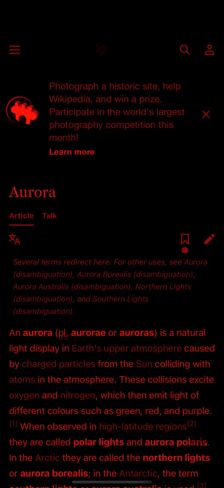
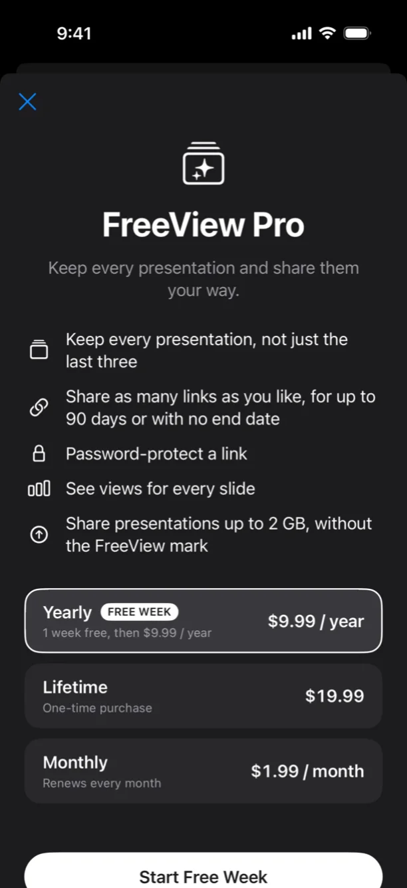
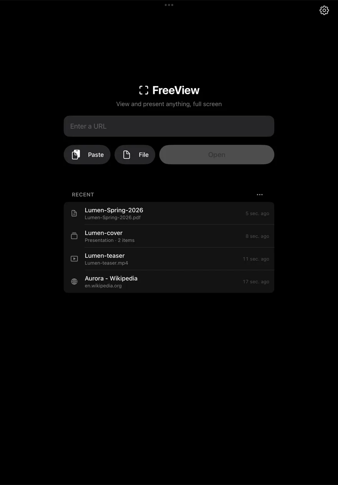

FreeView
View and present anything, full screen. Web pages, PDFs, videos, photos and prototypes, with nothing in the way.


For iPhone, iPad and Mac · Free to start
View and present anything, full screen. Web pages, PDFs, videos, photos and prototypes, with nothing in the way.


For iPhone, iPad and Mac · Free to start
Type an address, paste a link, or pick a file. Web pages, PDFs, videos, photos and HTML prototypes open edge to edge, with no browser bars and no app chrome in the way.
Open a PDF and swipe through it a page at a time, on black, scaled to fit. Pinch to zoom in, and a quiet page counter fades away after each turn.
Pick several files or photos and FreeView turns them into a deck, one item per slide. A multi-page PDF becomes one slide per page, and a video plays when its slide comes up.
Hand someone your iPad with something on screen and nothing else. No buttons, no menus. Leaving takes your PIN: touch and hold with three fingers, shake the device, or press ⌘. on a keyboard.
Everything turns deep red on black, web pages and videos included, so the screen is easy on dark-adapted eyes. Keep it on, or let it come on after 9 pm.
No account, no ads, no tracking. Your history and files stay on your device, and you decide how much of it FreeView remembers.
Real screens on iPhone and iPad: the home screen, a PDF as a slide, night mode on a web page, and FreeView Pro.




Viewing, presenting, kiosk mode, night mode and private browsing are free, and FreeView keeps your three most recent items. FreeView Pro keeps your whole history.
US prices; your App Store shows local pricing. The yearly plan renews automatically unless cancelled at least 24 hours before the period ends; manage it in Settings → Apple Account → Subscriptions.